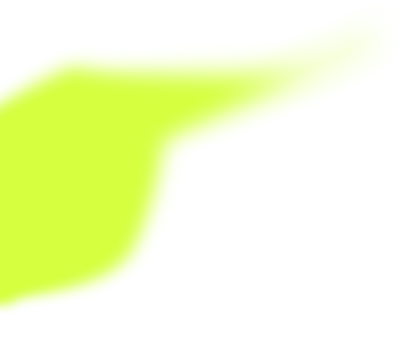
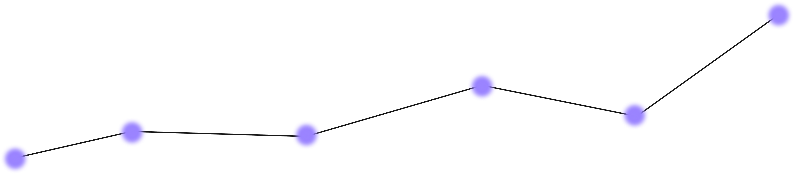
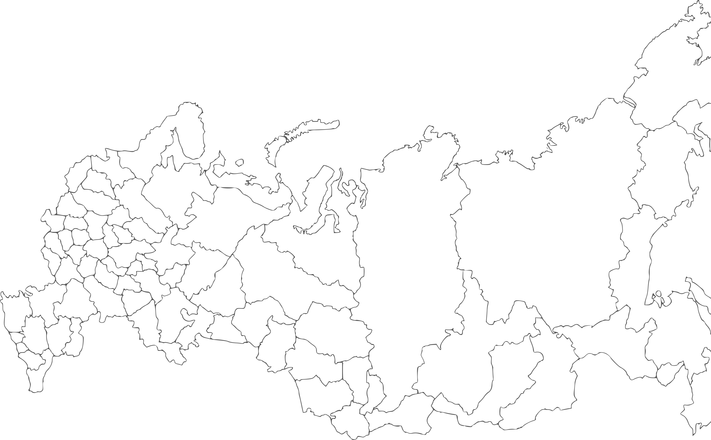
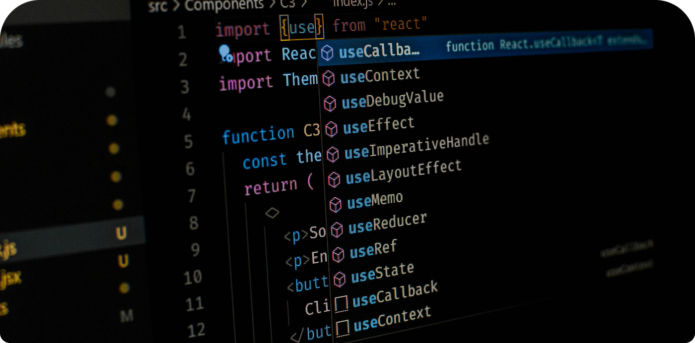

Трамплин — твой старт в IT-карьере
Стажировки, менторство, вакансии для студентов и выпускников. Найди работу мечты или найди таланты
Что такое «Трамплин»?
Трамплин — это экосистема, где студенты не просто ищут работу, а строят карьеру с 0
Студенты и выпускники
Находите стажировку, ментора, вакансию для Junior
или карьерное мероприятие. Развивайте навыки, стройте
нетворкинг и получайте офферы от ведущих IT-компаний.
Работодатели
Размещайте вакансии
и находите подходящих кандидатов.
Кураторы и ВУЗы
Модерируйте контент и помогайте студентам строить карьеру.
Как это работает

Шаг 1
Выбери свою роль
Шаг 2
Заполни профиль
Шаг 3
Настрой карьерные интересы
Шаг 4
Ищи возможности на карте или в ленте
Шаг 5
Откликайся и взаимодействуй
Шаг 6
Строй карьеру и получай офферы
Мы переосмыслили поиск работы — теперь вместо бесконечных списков интерактивная карта с маркерами возможностей
Офисные вакансии и очные мероприятия отображаются
по точному адресу, а удалённые позиции — по городу
работодателя. Так вы сразу видите, где находятся интересующие вас компании, и можете оценить варианты
в контексте знакомой географии.
Маркеры возможностей
Каждая вакансия, стажировка, менторская программа или мероприятие это отдельный маркер. Цвет зависит от типа возможности.
Модульная карточка
При наведении на маркер появляется краткая информация: название, компания, зарплата, ключевые навыки. Кликните, чтобы открыть всю карточку.
Фильтры
Сортируйте по навыкам, зарплате, формату работы и типу возможности.

Ближайшие онлайн-мероприятия
Участвуйте в прямых эфирах, задавайте вопросы представителям компаний
и узнавайте о вакансиях первыми
19 марта, 19:00 мск
онлайн
Как попасть на стажировку в IT
HR-специалисты и разработчики расскажут, как пройти отбор и получить оффер. Разбор резюме участников.
20-22 марта
онлайн
Трамплин-хакатон
48 часов на создание сервиса для психологов. Призы, стажировки и менторская поддержка.
24 марта, 12:00 мск
онлайн
День открытых дверей: СберТех
Прямой эфир с командами разработки.
Вакансии для стажеров и Junior-специалистов.

26 марта, 14:00 мск
онлайн
Git и GitHub: воркшоп
Разбор веток, merge, rebase и commit-сообщений. Практические задания и чек-лист для участников.
29 марта, 18:00 мск
онлайн
Вопросы Senior-разработчику
Открытый диалог с опытными разработчиками. Любой вопрос о карьере, технологиях и балансе.
Хотите провести встречу?
Напишите на почту tramplin@work.org,
чтобы получить больше подробностей
Остались вопросы? Тщательно подготовили ответы на самое главное

Кто может зарегистрироваться на платформе?
Платформа открыта для трех категорий пользователей: соискатели, работодатели и кураторы. Соискатели — студенты и выпускники, которые только начинают свой старт в карьере. Работодатели — компании и индивидуальные предприниматели, предлагающие возможности для профессионального развития. Кураторы — представители вузов или нанятые модераторы, которые администрируют платформу, верифицируют работодателей и модерируют контент.
Как происходит верификация компании? Зачем это нужно?
Верификация — это подтверждение, что компания реальна и добросовестна. Мы предлагаем несколько способов:
- ИНН и сайт — вы указываете ИНН и ссылку на официальный сайт (если имеется), мы проверяем данные через открытые реестры;
- Документы — загрузите выписку ЕГРЮЛ или другой подтверждающий документ.
Верификация защищает соискателей от фейковых вакансий и мошенников, а также повышает доверие и видимость вакансий.
Как настроить приватность профиля? Кто может видеть мои отклики?
В личном кабинете соискателя есть настройки приватности. Вы можете выбрать один из трёх вариантов:
- Только я — ваш профиль, резюме и отклики видите только вы и работодатели, которым вы откликнулись;
- Только мои контакты — информацию видят добавленные вами профессиональные контакты (друзья на платформе);
- Все авторизованные пользователи — ваш профиль открыт для нетворкинга, другие соискатели могут видеть ваши интересы и рекомендовать вас на вакансии.
Отклики на конкретные вакансии всегда видны только вам и работодателю, разместившему вакансию.
Что такое нетворкинг на платформе и как им пользоваться?
Нетворкинг — это возможность находить профессиональные контакты среди других соискателей. Вы можете: добавлять других пользователей в список контактов; видеть карьерные интересы своих контактов; рекомендовать друзей на вакансии или мероприятия, которые им подходят; получать рекомендации от других пользователей.
Это помогает искать работу не в одиночку, а в сообществе: вместе готовиться к собеседованиям, обмениваться полезными контактами и поддерживать друг друга на старте карьеры.
Что такое кураторы и какова их роль на платформе?
Кураторы — это представители вузов или нанятые модераторы, которые обеспечивают качество контента на платформе. В их задачи входит: верификация компаний; модерация карточек возможностей; управление пользователями.
По умолчанию в системе есть один администратор, который может создавать учетные записи других кураторов. Вузы могут назначать своих представителей для работы с платформой.
Платформа бесплатная? Есть ли скрытые платежи?
Да, «Трамплин» полностью бесплатен для всех пользователей. Соискатели могут бесплатно искать стажировки, откликаться на вакансии, участвовать в мероприятиях и пользоваться нетворкингом. Работодатели бесплатно размещают вакансии, стажировки и мероприятия после прохождения верификации. Вузы и кураторы также получают доступ к инструментам модерации без каких-либо платежей.
Никаких скрытых комиссий и платных подписок — платформа создана для поддержки карьерного развития студентов и выпускников.